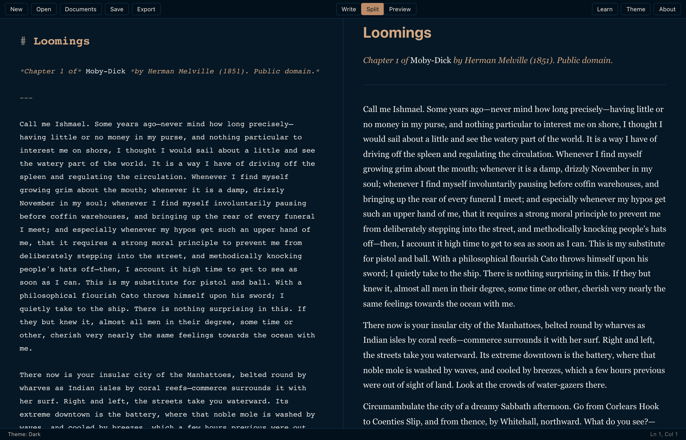

Call me Ishmael. Some years ago — never mind how long precisely — having little or no money in my purse, and nothing particular to interest me on shore, I thought I would sail about a little and see the watery part of the world.
Loomings is a markdown editor for macOS, Windows, and Linux. It opens to a blank page. You write. It stays out of the way. The first chapter of Moby-Dick is called Loomings, and that is where this came from.

Nothing to install: try Loomings in your browser (Chrome/Edge get real open/save; other browsers, opening and exporting via download).
On macOS with Homebrew: brew install --cask --no-quarantine tiagojct/loomings/loomings
All downloads (.msi, .rpm) · Source on GitHub
Intel Macs: build from source. The pre-built Intel .dmg queues forever on free CI runners.
What is there
Real markdown in the editor — bold reads bold, headings read heading, code reads code. List lines that continue themselves when you press return, and stop when you press it twice. An outline you can jump to with ⌘P. A focus mode that dims everything outside the sentence under the cursor. Word counts. A word goal if you want one. Find and replace. Light and dark themes that follow the system if you let them.
How it works
What is not
- No cloud sync.
- No account.
- No tracking.
- No newsletter.
- No themes marketplace.
- No AI assistant pestering the margin.
- No mobile companion.
The files are your files; they live wherever you put them.
Built with
Tauri 2 and CodeMirror 6. The macOS build is about twelve megabytes and idles at thirty of RAM. The source is MIT-licensed. The icon is set in italic Didot. The body in this page is Source Serif. The colours come from a chapter that opens with a man bored of land.
If macOS calls it damaged
The build is unsigned — no Apple Developer ID at the moment. Sequoia and Tahoe refuse the right-click trick now, so after moving Loomings.app into /Applications, run:
xattr -dr com.apple.quarantine /Applications/Loomings.appThat removes the quarantine flag Safari attached on download. The app opens normally afterwards. Alternatively, attempt to launch once, then approve it in System Settings under Privacy & Security.